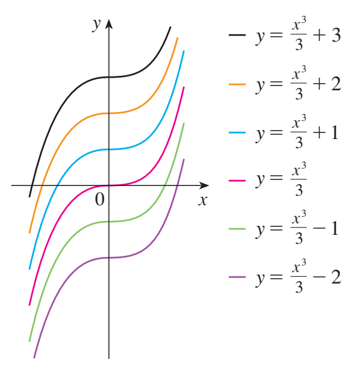
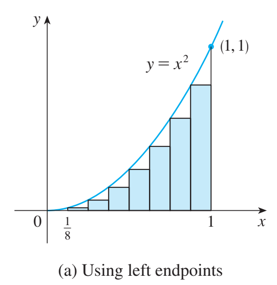
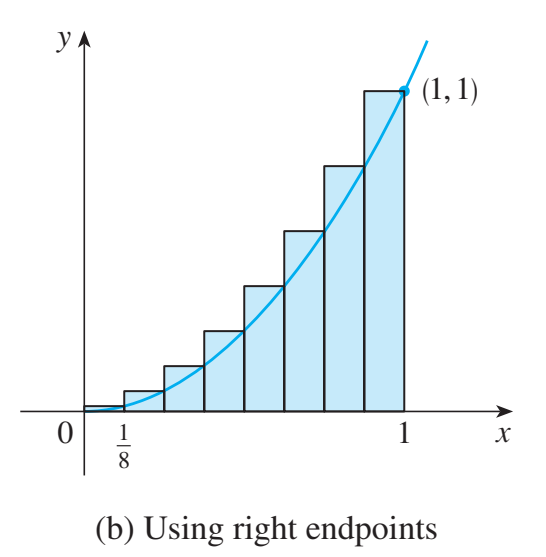
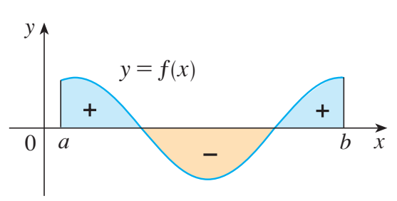

MA1508 Calculus · Chapter 5 · Sections 5.1–5.3
Antiderivatives and Definite Integrals
Begin with antiderivatives, derive accumulation from finite sums, establish integral properties, and prove the link that makes evaluation possible.
Stewart, Single Variable Calculus: Concepts and Contexts, 4th edition, §4.8 (printed pp. 317–324) and §§5.1–5.3. The original section numbers below identify the textbook material within this lesson.
Stewart 4.8 · printed pp. 317–324A. Antiderivatives
1. One derivative, a family of functions
A function \(F\) is an antiderivative of \(f\) on an interval \(I\) if \(F'(x)=f(x)\) for every \(x\) in \(I\). For example, \(x^3\), \(x^3+7\) and \(x^3-2\) all have derivative \(3x^2\).
If \(F'=G'=f\), then \((G-F)'=0\). By the Mean Value Theorem, \(G-F\) is constant on the interval. Thus every other antiderivative is \(F+C\).
Graphically, changing \(C\) shifts the curve vertically without changing its slope at any \(x\). On disconnected domains, constants can differ on separate intervals: \(1/x\) has \(\ln|x|+C_+\) for \(x>0\) and \(\ln|x|+C_-\) for \(x<0\).
The arbitrary constant shifts the curve

2. Basic rules — check by differentiating
| Function \(f(x)\) | Antiderivative family | Interval/domain |
|---|---|---|
| \(x^n,\ n\ne-1\) | \(x^{n+1}/(n+1)+C\) | An interval on which the powers and derivative rule are defined; use \(x>0\) for arbitrary real \(n\). |
| \(1/x\) | \(\ln|x|+C\) | An interval not crossing 0. |
| \(e^x\) | \(e^x+C\) | \(\mathbb R\) |
| \(\cos x\) | \(\sin x+C\) | \(\mathbb R\) |
| \(\sin x\) | \(-\cos x+C\) | \(\mathbb R\) |
| \(\sec^2x\) | \(\tan x+C\) | An interval avoiding \(\pi/2+k\pi\). |
| \(1/(1+x^2)\) | \(\arctan x+C\) | \(\mathbb R\) |
| \(1/\sqrt{1-x^2}\) | \(\arcsin x+C\) | \(-1<x<1\) |
Reverse the sum and constant-multiple rules term by term. One arbitrary constant is enough for the entire sum. Never use the power formula with \(n=-1\).
3. Worked example: simplify before finding antiderivatives
Find all antiderivatives of \(f(x)=6x^2+2\sqrt x-3/x^2+\cos x\), for \(x>0\).
Show answerHide answer
- Rewrite \(f(x)=6x^2+2x^{1/2}-3x^{-2}+\cos x\).
- Reverse the power rule term by term: \[F(x)=2x^3+\frac43x^{3/2}+3x^{-1}+\sin x+C.\]
- Check: \(F'(x)=6x^2+2x^{1/2}-3x^{-2}+\cos x=f(x)\). Note the positive coefficient of \(3/x\): its derivative is negative.
4. An initial value determines the constant
Find \(F\) if \(F'(x)=3x^2-4x+e^x\) and \(F(0)=2\).
Show answerHide answer
- First find the family: \(F(x)=x^3-2x^2+e^x+C\).
- Use the initial condition after finding the family: \(F(0)=1+C=2\), so \(C=1\).
- Check both requirements: \(F'=3x^2-4x+e^x\) and \(F(0)=2\).
5. Integrating twice needs two conditions
Find \(F\) if \(F''(x)=6x\), \(F'(0)=2\) and \(F(0)=5\).
Show answerHide answer
- An antiderivative of \(6x\) is \(F'(x)=3x^2+C_1\). Use \(F'(0)=2\) to obtain \(C_1=2\).
- Find an antiderivative again: \(F(x)=x^3+2x+C_2\). Use \(F(0)=5\) to obtain \(C_2=5\).
- Without the conditions, the full family would be \(x^3+C_1x+C_2\), not just \(x^3+C\).
6. Motion: acceleration → velocity → position
A ball is thrown vertically upward from a height of \(1.5\text{ m}\) with initial velocity \(19.6\text{ m/s}\). Neglect air resistance and use \(a(t)=-9.8\text{ m/s}^2\). Find velocity, height and maximum height before the ball hits the ground.
Show answerHide answer
- Choose upward as positive. Since \(v'=a=-9.8\), \(v(t)=-9.8t+C_1\). The condition \(v(0)=19.6\) gives \(v(t)=19.6-9.8t\).
- Since \(s'=v\), \(s(t)=19.6t-4.9t^2+C_2\). With \(s(0)=1.5\), \(s(t)=1.5+19.6t-4.9t^2\).
- At the highest point \(v=0\), so \(t=2\text{ s}\). Velocity is positive before 2 and negative after 2, so height is maximised there: \(s(2)=1.5+39.2-19.6=21.1\text{ m}\).
- The physical time domain ends at the positive root of \(s(t)=0\), namely \((19.6+\sqrt{413.56})/9.8\approx4.075\text{ s}\). The peak at \(t=2\) lies within this domain.
7. Data-science background — a cumulative probability curve
Optional background; not a prerequisite. A probability density describes how probability is distributed over a continuous variable. A cumulative distribution function (CDF) \(P(x)\) is the probability of a value at most \(x\). Where a density \(p\) is continuous, \(P'=p\).
Suppose \(p(x)=2x\) for \(0<x<1\), and is zero outside that interval. On \((0,1)\), an antiderivative is \(P(x)=x^2+C\). The boundary condition \(P(0)=0\) gives \(C=0\). The complete cumulative curve is
It is continuous and nondecreasing, starts at 0, and ends at 1. The match at \(x=1\) verifies total probability 1. We only asserted the derivative relation on intervals where the density is continuous; \(P\) has no derivative at \(x=1\).
8. Check your understanding
Find \(H\) on \(x>0\) if \(H'(x)=2x+1/x\) and \(H(1)=3\).
Show answerHide answer
- The family is \(H(x)=x^2+\ln x+C\).
- At \(x=1\), \(1+0+C=3\), so \(C=2\). Differentiate to check.
Stewart 5.1 · printed p. 332B. Areas and distances
1. From rectangles to area
For a continuous, nonnegative function \(f\) on \([a,b]\), partition the interval into \(n\) equal pieces of width \(\Delta x=(b-a)/n\). A rectangle over the ith piece has area \(f(x_i^*)\Delta x\). Adding rectangles gives an approximation to the area under the curve.
Start with four rectangles, before using a limit. For \(f(x)=x^2\) on \([0,1]\), the cuts are \(0,1/4,1/2,3/4,1\). Every width is \(1/4\). Choosing right endpoints gives heights \(1/16,1/4,9/16,1\), so
Choosing left endpoints gives
The function is increasing, so the left rectangles lie below the curve and the right rectangles lie above it: \(L_4\le A\le R_4\). These two finite sums are approximations, not yet the area itself.
Now derive the general sum. On \([a,b]\), let \(\Delta x=(b-a)/n\) and \(x_i=a+i\Delta x\). The ith strip is \([x_{i-1},x_i]\). Its right rectangle has height \(f(x_i)\), so adding the \(n\) rectangle areas gives
Left endpoints give \(L_n=\sum_{i=1}^n f(a+(i-1)\Delta x)\Delta x\). We may also choose any sample \(x_i^*\in[x_{i-1},x_i]\). For continuous nonnegative \(f\), these choices approach the same area as the widths tend to zero:
For an increasing function, left endpoints give an underestimate and right endpoints give an overestimate. These bounds squeeze together as the pieces become smaller. This inequality reverses for a decreasing function.
2. A complete limit calculation
Find the area under \(y=x^2\) from 0 to 1 using right-endpoint rectangles.
Show answerHide answer
- Use \(\Delta x=1/n\), \(x_i=i/n\). Thus \(R_n=\sum_{i=1}^n(i/n)^2(1/n)=n^{-3}\sum_{i=1}^n i^2\).
- Use \(\sum_{i=1}^n i^2=n(n+1)(2n+1)/6\), so \(R_n=(n+1)(2n+1)/(6n^2)\).
- Let \(n\to\infty\): \(R_n\to1/3\). Left endpoints give \(L_n=(n-1)(2n-1)/(6n^2)\to1/3\) as well.
For this increasing parabola, the finite formulas are
Thus \(R_n-L_n=1/n\to0\), and both bounds tend to \(1/3\). Every sample rectangle lies between the left and right rectangles on its strip, so its sum is squeezed to the same limit. The exact value comes from this limit argument, rather than from a large but finite number of rectangles.
Left and right rectangles squeeze the area


Derivation: write the sum before finding a shortcut
Following Stewart §5.1, Example 3, pp. 338–339.
For the area under \(f(x)=e^{-x}\) on \([0,2]\), first write a right-endpoint limit. Then estimate with four and ten midpoint rectangles. Do not use an antiderivative yet.
Show answerHide answer
- Divide into \(n\) strips: \(\Delta x=2/n\), \(x_i=2i/n\). The ith contribution is \(e^{-2i/n}(2/n)\).
- Add, then take the limit: \[R_n=\frac2n\sum_{i=1}^n e^{-2i/n},\qquad A=\lim_{n\to\infty}\frac2n\sum_{i=1}^n e^{-2i/n}.\] This is already a precise expression for the area; setting up the limit and evaluating it are separate tasks.
- With four strips the midpoints are \(1/4,3/4,5/4,7/4\): \[M_4=\frac12(e^{-1/4}+e^{-3/4}+e^{-5/4}+e^{-7/4})\approx0.855723.\]
- With ten strips, \(\Delta x=0.2\) and the midpoints are \(0.1,0.3,\ldots,1.9\): \[M_{10}=0.2\sum_{i=1}^{10}e^{-(2i-1)/10}\approx0.863225.\] Both are finite approximations. The Evaluation Theorem later supplies an efficient exact calculation.
3. Distance from a velocity graph
If velocity \(v(t)\ge0\), the distance travelled over a short interval is approximately \(v(t_i^*)\Delta t\). Its total is the limit of these sums. Velocity times time has units of distance.
A discrete measurement problem. Stewart §5.1, Example 4 (pp. 339–340), starts with speedometer readings rather than a velocity formula. The graph below shows the book’s rounded feet-per-second readings:
Estimate the distance over these 30 seconds by treating speed as constant on each five-second interval.
Show answerHide answer
- On the first interval, the left reading gives \(25\text{ ft/s}\times5\text{ s}=125\text{ ft}\). Apply the same multiplication to each interval.
- Using starting readings, \[L_6=5(25+31+35+43+47+46)=1135\text{ ft}.\]
- Using ending readings, \[R_6=5(31+35+43+47+46+41)=1215\text{ ft}.\]
- Each product is both a short-distance estimate and the area of a rectangle in a speed–time plot. The readings rise and then fall; these two totals are not automatically lower and upper bounds.
From sampled readings to a limiting model. If a continuous velocity \(v(t)\ge0\) is known throughout \([a,b]\), use small intervals and write
The same limit describes area and accumulated distance because both add “height × width.” When velocity can be negative, the signed sum instead gives displacement. Here is the original formula-based example:
For \(v(t)=2t\) m/s on \(0\le t\le2\) s, estimate distance with four left and four right rectangles.
Show answerHide answer
- The width is \(\Delta t=0.5\) s. Left heights are 0, 1, 2, 3 m/s, so \(L_4=0.5(0+1+2+3)=3\) m.
- Right heights are 1, 2, 3, 4 m/s, so \(R_4=0.5(1+2+3+4)=5\) m.
- The graph is a triangle with base 2 s and height 4 m/s, giving exact distance \(\tfrac12(2)(4)=4\) m, between the two estimates.
When velocity changes sign, a signed sum measures displacement. Total distance uses speed \(|v(t)|\); §5.3 works through this distinction.
5. Check your understanding
For \(f(x)=x+1\) on \([0,2]\), compute \(L_2\) and \(R_2\). What is the exact area?
Show answerHide answer
- \(\Delta x=1\). Left heights are 1 and 2, giving \(L_2=3\). Right heights are 2 and 3, giving \(R_2=5\).
- The region is a trapezium with parallel sides 1 and 3 and width 2: area \((1+3)2/2=4\).
Stewart 5.2 · printed p. 343C. The definite integral
1. Riemann sums and the definite integral
First: a finite Riemann sum. Choose a partition \(P:a=x_0<x_1<\cdots<x_n=b\). In each interval choose any sample point \(x_i^*\in[x_{i-1},x_i]\), and let \(\Delta x_i=x_i-x_{i-1}\). The partition need not have equal widths.
Each contribution is height at the chosen point × interval width. The sample point selects the rectangle’s height; it does not change that interval’s boundaries. Contributions below the axis are negative.
Explore the definition: change the partition and sample points
A finite Riemann sum depends on both the widths and the chosen heights. Change them independently below, and compare the sum with the integral. Open the full visual ↗
Interactive companion: open Riemann Studio from the online notes to change f, the partition and the sample points.
Then: the limiting definite integral. Write \(\|P\|=\max_i\Delta x_i\) for the mesh, the largest width. If all partitions and all allowed sample-point choices give the same limit as \(\|P\|\to0\), that limit is \(\int_a^b f(x)\,dx\). For equal widths, \(\Delta x_i=(b-a)/n\), giving the familiar special case below.
For a bounded function on \([a,b]\), use partitions whose largest subinterval width tends to zero. If all choices of partitions and sample points give the same limit, that limit is the definite integral. For equal-width partitions the notation is
The function is the integrand, \(a,b\) are limits of integration, and \(x\) is a dummy variable: replacing it consistently by \(t\) changes nothing. Continuous functions are integrable; bounded functions with only finitely many jump discontinuities are also integrable.
Derivation: evaluate a signed integral from its definition
Following Stewart §5.2, Example 2, pp. 346–347.
For direct calculations with equal widths, the useful finite-sum identities are
For \(f(x)=x^3-6x\) on \([0,3]\), calculate a six-term right Riemann sum, then evaluate the integral by taking a limit of sums.
Show answerHide answer
- For six strips, \(\Delta x=1/2\) and the right endpoints are \(0.5,1,1.5,2,2.5,3\). Thus \[R_6=\tfrac12(-2.875-5-5.625-4+0.625+9)=-3.9375.\] Negative heights contribute negative terms.
- For general \(n\), \(\Delta x=3/n\) and \(x_i=3i/n\). Substitute into every factor: \[R_n=\sum_{i=1}^n\left[\left(\frac{3i}{n}\right)^3-6\left(\frac{3i}{n}\right)\right]\frac3n=\frac{81}{n^4}\sum_{i=1}^ni^3-\frac{54}{n^2}\sum_{i=1}^ni.\]
- Apply the finite-sum identities: \[R_n=\frac{81(n+1)^2}{4n^2}-\frac{27(n+1)}n.\]
- Only now take the limit: \[\int_0^3(x^3-6x)\,dx=\lim_{n\to\infty}R_n=\frac{81}4-27=-\frac{27}4.\] This is signed accumulation, not total geometric area.
2. Signed area and orientation
Evaluate \(\int_0^2(x-1)\,dx\) by geometry. Also find the total area between the graph and the axis.
Show answerHide answer
- On \([0,1]\) the graph lies below the axis and forms a triangle of area \(1/2\). On \([1,2]\) it lies above the axis with the same area.
- The signed integral is \(-1/2+1/2=0\). Total geometric area adds their magnitudes.
Below the axis means a negative contribution

3. Properties of the definite integral
Stewart §5.2, Properties 1–8, pp. 350–352.
Assume the functions are integrable on the intervals used below; continuity is a sufficient condition. First extend the notation to reversed and equal endpoints:
Reversing direction reverses the signed increment. These conventions extend the forward-interval definition; they do not assert that a nonnegative function has a nonnegative integral with reversed bounds.
Properties 1–4: constants and linearity. Here \(k\) is a constant, independent of \(x\).
On any forward partition, the widths add to \(b-a\), so \(\sum k\Delta x_i=k(b-a)\). Using the same partition and sample points for both functions gives
Take the limit on both sides to obtain Property 2. Similarly, a constant factors out of each finite sum and its limit, giving Property 3. Apply the sum rule to \(f+(-1)g\) for Property 4.
Property 5: additivity over intervals. Split at \(c\). The compact linearity and additivity formulas are
For \(a<c<b\), choose partitions that include \(c\). Each finite sum on \([a,b]\) is exactly the sum of its contributions on \([a,c]\) and \([c,b]\). As the largest width tends to zero, the two pieces converge to their respective integrals. Reversed-limit and zero-length conventions extend the identity to other orders of the endpoints.
Properties 6–8: order and bounds. These require \(a\le b\).
If \(a\le b\) and \(f\le g\) on the interval, then \(\int_a^b f\le\int_a^b g\). Consequently, if \(m\le f\le M\), then \(m(b-a)\le\int_a^b f\le M(b-a)\).
For nonnegative \(f\), every term \(f(x_i^*)\Delta x_i\) is nonnegative, so the sum and its limit are nonnegative. Apply this to \(g-f\) for comparison. Finally compare \(f\) with the two constant functions \(m\) and \(M\), and use Property 1 to evaluate their integrals.
A constant factor can leave an integral; a variable factor cannot generally do so. Linearity gives a rule for sums and differences, not \(\int fg=(\int f)(\int g)\). For example, on \([0,1]\), \(\int x^2=1/3\), while \((\int x)^2=1/4\).
Use integral properties and the area already derived for \(x^2\) to evaluate \(\int_0^1(4+3x^2)\,dx\), without finding a new antiderivative.
Show answerHide answer
- Split the sum and take the constant outside: \[\int_0^1(4+3x^2)\,dx=\int_0^1 4\,dx+3\int_0^1x^2\,dx.\]
- The first integral is \(4(1-0)=4\). The rectangle-limit derivation gave \(\int_0^1x^2\,dx=1/3\), so the total is \(4+3(1/3)=5\).
Bound \(\int_0^1\sqrt{1+x^2}\,dx\) without finding an antiderivative.
Show answerHide answer
- On \([0,1]\), \(1\le\sqrt{1+x^2}\le\sqrt2\).
- Integrate the two constant bounds over an interval of length 1.
The same bounding method gives \(e^{-1}\le\int_0^1e^{-x^2}\,dx\le1\), because \(e^{-1}\le e^{-x^2}\le1\) throughout the interval. An elementary antiderivative is unnecessary for establishing these bounds.
4. Continuing background: one total, different samples
The arrivals from §5.1 are now written \(N=\int_0^1r(t)\,dt\). A finite sample table gives an estimate, not the defining limit. For midpoint samples at \(t=1/8,3/8,5/8,7/8\), the model rates are \(0.75,2.25,3.75,5.25\) thousand/hour. Multiplying their sum by \(1/4\) hour gives \(N\approx3\) thousand records. Here it is exact because the model is linear; this is not true for a general rate curve.
5. Check your understanding
If \(\int_0^2f=5\) and \(\int_0^5f=8\), find \(\int_5^2 3f\).
Show answerHide answer
- Additivity gives \(\int_2^5 f=8-5=3\).
- Reverse the limits and multiply by 3: \(\int_5^2 3f=-3(3)\).
Stewart 5.3 · printed p. 356D. Evaluation and net change
1. The Evaluation Theorem
If \(f\) is continuous on \([a,b]\) and \(F\) is an antiderivative of \(f\), then
Stewart introduces this evaluation rule here and develops the full Fundamental Theorem in §5.4. Any antiderivative works: its arbitrary constant cancels at the endpoints.
Assume \(a<b\), \(f\) is continuous on \([a,b]\), and \(F'=f\). Divide the interval into \(n\) equal parts, with \(x_i=a+i\Delta x\) and \(\Delta x=(b-a)/n\).
Step 1: telescope the exact increments of \(F\). Intermediate endpoint values cancel:
Step 2: apply the Mean Value Theorem on each small interval. The function \(F\) is continuous on each closed strip and differentiable inside it. Thus there is a point \(c_i\in(x_{i-1},x_i)\) such that
Substitution gives an exact finite identity:
The Mean Value Theorem supplies these particular points \(c_i\); an arbitrary set of sample points does not generally give this exact finite equality.
Step 3: take the Riemann-sum limit. Because \(f\) is continuous, its Riemann sums converge to the definite integral for every allowed choice of sample points, including these \(c_i\). As \(n\to\infty\), the left side stays constant and \(\Delta x\to0\). Therefore
For equal endpoints both sides are zero; for reversed endpoints both change sign. This proves the theorem for all endpoint orders. The theorem connects the integral defined by accumulation with the antiderivative introduced at the start of the lesson.
Return to the two area derivations. The parabola now takes one line: \(\int_0^1x^2\,dx=[x^3/3]_0^1=1/3\), agreeing with the rectangle limit. Likewise \(\int_0^2e^{-x}\,dx=[-e^{-x}]_0^2=1-e^{-2}\approx0.864665\), which explains the midpoint estimates above. We can now use the theorem for faster calculations:
Worked example: an exponential
Evaluate \(\int_1^3 e^x\,dx\).
Show answerHide answer
- The exponential function is continuous on \([1,3]\). An antiderivative is \(F(x)=e^x\).
- Apply the Evaluation Theorem at the two endpoints: \[\int_1^3e^x\,dx=[e^x]_1^3=e^3-e.\]
- Using \(e^x+C\) instead gives \((e^3+C)-(e+C)=e^3-e\). The constant cancels; the definite-integral answer has no \(+C\).
Worked example: area under the cosine curve
Find the area under \(y=\cos x\) from 0 to \(b\), where \(0\le b\le\pi/2\). What happens when \(b=\pi/2\)?
Show answerHide answer
- On this interval \(\cos x\) is continuous and nonnegative, so its integral equals the geometric area. An antiderivative is \(F(x)=\sin x\).
- Keep the upper endpoint as a parameter: \[A(b)=\int_0^b\cos x\,dx=[\sin x]_0^b=\sin b-\sin0=\sin b.\]
- In particular, \(A(\pi/2)=\sin(\pi/2)=1\). We obtain the exact curved area by evaluating the antiderivative at two endpoints.
Worked example: a polynomial and a reciprocal
Evaluate \(\int_1^3(2x+1/x)\,dx\).
Show answerHide answer
- The interval is positive, so \(F(x)=x^2+\ln x\) is an antiderivative there.
- \(F(3)-F(1)=(9+\ln3)-(1+\ln1)=8+\ln3\).
Worked example: a polynomial with a negative lower limit
Evaluate \(\int_{-1}^2(3x^2-2x+1)\,dx\).
Show answerHide answer
- The integrand is a polynomial, hence continuous on \([-1,2]\). Integrate term by term to choose \(F(x)=x^3-x^2+x\).
- Evaluate each endpoint separately: \[F(2)=8-4+2=6,\qquad F(-1)=-1-1-1=-3.\]
- Subtract the entire lower-endpoint value: \[\int_{-1}^2(3x^2-2x+1)\,dx=F(2)-F(-1)=6-(-3)=9.\] Parentheses prevent losing the sign of the lower-endpoint contribution.
Worked example: reversed limits
Evaluate \(\int_{\pi}^0\sin x\,dx\).
Show answerHide answer
- The function is continuous on \([0,\pi]\), and \(F(x)=-\cos x\) is an antiderivative.
- Use the displayed endpoint order: upper endpoint 0 minus lower endpoint \(\pi\). Thus \[\int_{\pi}^0\sin x\,dx=[-\cos x]_{\pi}^0=-\cos0-(-\cos\pi)=-1-1=-2.\]
- Equivalently, \(\int_0^{\pi}\sin x\,dx=2\), so reversing the limits changes the sign. Nonnegative function values do not imply a nonnegative integral when the limits run backwards.
Worked example: the interval matters
Evaluate \(\int_{-2}^{-1}dx/x\). Can the same endpoint calculation be used for \(\int_{-1}^1dx/x\)?
Show answerHide answer
- On \([-2,-1]\), the function \(1/x\) is continuous and \(F(x)=\ln|x|\) is an antiderivative.
- Apply the theorem on this valid interval: \[\int_{-2}^{-1}\frac{dx}{x}=[\ln|x|]_{-2}^{-1}=\ln1-\ln2=-\ln2.\]
- The interval \([-1,1]\) crosses zero, where \(1/x\) is undefined and unbounded. There is no antiderivative \(\ln|x|\) defined across that whole interval, so the Evaluation Theorem does not apply.
- The formal subtraction \(\ln|1|-\ln|-1|=0\) is invalid here. The ordinary definite integral across zero does not exist; oddness cannot justify cancelling a singularity. Improper integrals are treated later.
2. Indefinite integrals: notation for an antiderivative family
Stewart §5.3, pp. 357–359; connect with Antiderivatives in Part A.
The indefinite integral \(\int f(x)\,dx=F(x)+C\) denotes a family of functions. A definite integral is a number. For a continuously differentiable quantity \(Q\), the net-change relation will follow below; first distinguish the two integral concepts carefully.
Definition. On an interval \(I\), if \(F'(x)=f(x)\), write
This notation asks for all functions whose derivative is \(f\). The variable \(x\) remains in the answer, and \(dx\) identifies the variable of antidifferentiation. There are no endpoint bounds in an indefinite integral.
Why include \(C\)? Differentiation removes every constant: \((F+C)'=f\). Conversely, if \(G'=F'=f\) on an interval, then \((G-F)'=0\), so the Mean Value Theorem gives \(G-F=C\). Thus \(F+C\) is the whole antiderivative family on that interval. An initial condition selects one member; without it, the constant is undetermined.
An antiderivative versus an indefinite integral
An antiderivative is a function satisfying a derivative equation. To say that \(F\) is an antiderivative of \(f\) on an interval means \(F'=f\) there. Asking for an antiderivative only requires one such function. Asking for all antiderivatives requires the entire family \(F+C\).
An indefinite integral is notation for that antidifferentiation problem and its answer. In these notes, \(\int f(x)\,dx=F(x)+C\) records the complete antiderivative family. Thus finding an indefinite integral and finding all antiderivatives are the same mathematical task; the distinction is between one chosen function and the family it belongs to.
For example, on \(\mathbb R\), both of the following are antiderivatives of \(f(x)=2x\):
Either function answers “find an antiderivative.” The indefinite integral includes both of them and every other constant translate:
If we also require \(F(1)=3\), then \(1+C=3\), so \(C=2\) and the selected antiderivative is \(F(x)=x^2+2\). This extra condition selects a function from the family; it does not change the indefinite-integral family itself.
The terminology sometimes overlaps: “an indefinite integral of \(f\)” can also mean one particular antiderivative. State whether the answer is one chosen function or the general family. Neither is the numerical accumulation specified by a definite integral.
| Question | An antiderivative | Indefinite integral | Definite integral |
|---|---|---|---|
| Notation | \(F\), with \(F\prime=f\). | \(\int f(x)\,dx\) | \(\int_a^bf(x)\,dx\) |
| What does it ask for? | One function with derivative \(f\). | A family with derivative \(f\). | Signed accumulation on a specified interval. |
| Kind of answer | A particular function \(F(x)\). | \(F(x)+C\), a family of functions. | A number for fixed \(a,b\). |
| Example | \(F(x)=x^3/3\) is an antiderivative of \(x^2\). | \(\int x^2\,dx=x^3/3+C\). | \(\int_0^1x^2\,dx=1/3\). |
| How to check | Verify \(F\prime=f\). | Differentiate the answer. | Use the defining limit, geometry, properties, or the Evaluation Theorem. |
The connection is a theorem. Once \(F'=f\) and the Evaluation Theorem applies,
The arbitrary constant cancels when endpoints are subtracted. We therefore use any one antiderivative to evaluate a definite integral, and do not append \(+C\) to its numerical value.
Rules and domains. Reverse the differentiation rules from Part A. For example, \(\int x^p\,dx=x^{p+1}/(p+1)+C\) for \(p\ne-1\), on an interval where the powers and derivative rule are defined, whereas \(\int dx/x=\ln|x|+C\) on an interval that avoids zero. The latter formula cannot be used across zero: different constants may be chosen on the two disconnected intervals.
Antidifferentiation is linear:
Only one arbitrary constant is needed for the final sum. An antiderivative need not have an elementary formula: the accumulation function in the next lecture gives an antiderivative of every continuous function.
On \(x>0\), find \(\int(3x^2-2+1/x)\,dx\). Then evaluate \(\int_1^2(3x^2-2+1/x)\,dx\). Explain why the two answers have different forms.
Show answerHide answer
- Antidifferentiate term by term: \[\int(3x^2-2+1/x)\,dx=x^3-2x+\ln x+C,\qquad x>0.\] The derivative is \(3x^2-2+1/x\), for every choice of \(C\).
- For the definite integral use \(F(x)=x^3-2x+\ln x\): \[F(2)-F(1)=(8-4+\ln2)-(1-2+\ln1)=5+\ln2.\]
- The first answer is a family depending on \(x\). The second is a fixed accumulated value on \([1,2]\); its constants have cancelled.
From antiderivatives to net change
If \(Q\) is continuously differentiable, then it is an antiderivative of its rate \(Q'\). Apply the Evaluation Theorem:
An integrated rate gives a change. To recover the final quantity, add the initial quantity. Units are integrand units multiplied by variable units.
For position, \(Q=s\) and \(Q'=v\), giving displacement \(s(b)-s(a)\). If direction changes, distance instead accumulates speed \(|v|\), as the next example shows.
3. Displacement and distance
A particle has velocity \(v(t)=t-1\) m/s on \([0,3]\) s. Find displacement and total distance.
Show answerHide answer
- An antiderivative is \(t^2/2-t\). Displacement is \([t^2/2-t]_0^3=3/2\) m.
- Velocity is negative on \([0,1]\) and positive on \([1,3]\). Split at the zero: distance is \(-\int_0^1(t-1)dt+\int_1^3(t-1)dt\).
- The two distances are \(1/2\) m and 2 m, giving \(5/2\) m.
\(\left|\int v\right|\) can be smaller than \(\int|v|\). Cancellation removes opposite directions from displacement.
4. Continuing background: total arrivals
The rate model remains \(r(t)=6t\). Its one-hour total is \(N=\int_0^1 6t\,dt=[3t^2]_0^1=3\) thousand records. If a storage counter started at 10 thousand and records were never removed, it would end at 13 thousand. The integral itself gives the increment of 3, not the final counter value.
5. Check your understanding
Evaluate \(\int_{-1}^1|x|\,dx\) and compare with \(\int_{-1}^1x\,dx\).
Show answerHide answer
- For the absolute value, split at 0: \(\int_{-1}^0(-x)dx+\int_0^1x dx=1/2+1/2=1\).
- For \(x\), the signed contributions cancel, or \([x^2/2]_{-1}^1=0\).